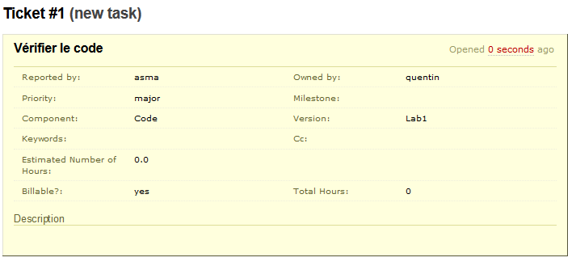
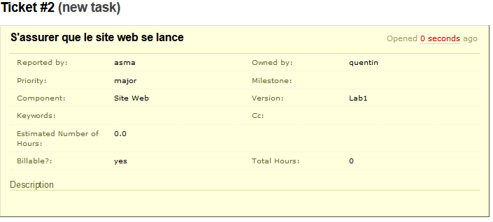

Table of Contents
On se connecte à la machine virtuelle VMware pour s'assurer de son bon fonctionnement. Le laboratoire est réalisé sous environnement Windows et nous utilisons le terminal PuTTY pour nous connecter avec les paramètres suivants:
- adresse IP:
Log240-20133-14.logti.etsmtl.ca
- port:
22
- protocole:
SSH
 |
Un terminal s'ouvre alors et nous propose de nous connecter. Nous utilisons les identifiants suivants:
- login:
system
- password:
SystemPass14
Note
Sur un terminal UNIX, les mots de passe ne s'affichent pas lors de la saisie par soucis de sécurité, c'est pourquoi la sortie console suivante en est dépourvue.
login as:systemsystem@Log240-20133-14.logti.etsmtl.ca's password:Linux log240-20133-14 2.6.32-51-generic-pae #113-Ubuntu SMP Wed Aug 21 20:02:16 UTC 2013 i686 GNU/Linux Ubuntu 10.04.4 LTS Welcome to Ubuntu! * Documentation: https://help.ubuntu.com/ System information as of Mon Sep 16 15:48:01 EDT 2013 System load: 0.53 Memory usage: 18% Processes: 75 Usage of /: 76.1% of 4.92GB Swap usage: 0% Users logged in: 0 Graph this data and manage this system at https://landscape.canonical.com/ 6 packages can be updated. 3 updates are security updates. New release 'precise' available. Run 'do-release-upgrade' to upgrade to it. Last login: Mon Sep 16 15:45:09 2013 from logti-a3324-19.ens.ad.etsmtl.casystem@log240-20133-14:~$
Note
Par soucis de clarté, l'invite de commande du shell (prompt) sera abrégée $ par la suite.
On constate que la machine virtuelle est correctement lancée et en état de fonctionner.
Pour assurer le suivi du code source, nous utilisons le gestionnaire de sources Subversion (SVN). Nous commençons par changer les droits sur le dossier /opt qui sera notre dossier de travail pour lancer SVN en tant que daemon.
$cd /opt$sudo /bin/chown -R www-data:svnusers svn[sudo] password for system: $sudo /bin/chmod -R u+wrx,g+wrx,o-wrx svn$sudo /usr/bin/svnserve -d
On ajoute ensuite les différents utilisateurs:
- client:
L'utilisateur que notre client utilisera pour accéder au code
$
sudo /usr/sbin/useradd client -G svnusers -c "Utilisateur client (BudgetPersonnel2000)" -m$sudo /usr/bin/passwd clientEnter new UNIX password: Retype new UNIX password:passwd: password updated successfully- asma:
L'utilisateur du développeur 1
$
sudo /usr/sbin/useradd asma -G svnusers -c "Utilisateur developpeur (MaintenancePlus)" -m$sudo /usr/bin/passwd asmaEnter new UNIX password: Retype new UNIX password:passwd: password updated successfully- quentin:
L'utilisateur du développeur 2
$
sudo /usr/sbin/useradd quentin -G svnusers -c "Utilisateur developpeur (MaintenancePlus)" -m$sudo /usr/bin/passwd quentinEnter new UNIX password: Retype new UNIX password:passwd: password updated successfully
Important
Tout les mots de passes utilisés sont identiques aux noms des utilisateurs. Il est évident que ceci ne constitue pas une bonne pratique de sécurité mais, dans un soucis de simplification du rapport, nous avons décidé de faire ainsi.
Tip
Nous pouvons vérifier que ces utilisateurs ont bien été crées sur la VMware de la manière suivante:
$cat /etc/passwd | grep "Utilisateur" | cut -d: -f1client asma quentin
Nous envoyons le code source de FinanceJ sur le dépôt SVN nouvellement configuré.
Nous utilisons le logiciel TortoiseSVN pour réaliser cette opération.
Dans un premier temps, nous créons un dossier Code contenant les dossiers branches, tags et trunk. Nous avons ajouté à ce dernier dossier les codes sources du projet FinanceJ.
Caution
Le vocabulaire de TortoiseSVN diffère de celui couramment utilisé: L'importation SVN est un envoi depuis un poste local vers le serveur et inversement concernant l'exportation. Afin de lever l'ambiguïté, nous utiliserons les termes classiques import/export.
 |
 |
Nous vérifions ensuite que l'envoi a correctement fonctionné en essayant d'importer le code envoyé dans un second dossier en local.
Note
Nous aurions également pu effectuer un ls directement sur le serveur via PuTTY mais des restrictions sur les VMwares nous en empêchent.
CodebisCodebisNous avons utilisé Trac, un système minimaliste de bug tracking et de wiki permettant la suivi de projet de développement. Tout d'abord, nous avons vérifié que Trac était correctement installé avec la bonne version:
$tracd --versiontracd 0.11.7
Nous créons ensuite les 3 utilisateurs Trac de la manière suivante:
$cd trac/conf/$sudo htpasswd trac.htpasswd clientNew password: Re-type new password: Adding password for user client
$sudo htpasswd trac.htpasswd asmaNew password: Re-type new password: Adding password for user asma
$sudo htpasswd trac.htpasswd quentinNew password: Re-type new password: Adding password for user quentin
Tip
Nous pouvons vérifier que les utilisateurs ont correctement été rajoutés de la manière suivante:
$cat trac.htpasswd | cut -d: -f1admin asma quentin client
Nous nous sommes ensuite connectés à l'interface web de Trac. Nous nous sommes connectés en tant qu'administrateur avec les identifiants par défaut suivants:
- login:
admin
- password:
admin
 |
Nous avons ensuite définit les permissions de chaque utilisateur de Trac en suivant les contraintes suivantes:
- Il n'y a qu'un seul développeur ayant les droits d'administrateur (asma)
- Les développeurs doivent avoir accès à la plupart des fonctionnalités exceptés les tâches d'administration
- Le client peut uniquement consulter Trac et créer des tickets pour remonter des anomalies aux développeurs
Note
Afin d'éviter de redéfinir chaque permission pour chaque nouvel utilisateur éventuel, nous avons décidé de créer deux groupes de permissions:
- developpers
- clients
Ceci nous permet d'ajouter simplement des développeurs ou des comptes clients tout en conservant des permissions cohérentes.
 |
Les tickets dans Trac peuvent être utilisés pour assigner des tâches de projet, pour faire des requêtes, des reports de bugs et du support logiciel. Ici nous avons créé 2 requêtes / tickets / tâches. À l’aide de Trac, nous avons la possibilité de:
- Définir la priorité de la tâche
- Préciser le composant affecté
- Estimer le nombre d'heures pour la tâche
- Préciser la version
- Ajouter des commentaires
- Joindre des fichiers
- etc.
|  |
|  |
Les composants sont les systèmes/modules qui peuvent être affectés par des problèmes et donc être concernés par les tickets. Nous avons crée 2 composants:
- code
- site web
 |
 |
Les milestones sont les étapes importantes de la maintenance du projet.
Nous avons déplacé le fichier settings.xml fourni dans le répertoire C:\Documents and Settings\am03450\.m2\
Nous avons configuré le fichier pom.xml puis nous l'avons exécuté. Maven a alors compilé et exécuté le projet.
Maven pouvant générer un site web du projet à partir des sources, nous avons configuré le fichier pom.xml pour ajouter un plugin permettant la génération de rapports.
Maven permet également de générer des rapports d’analyse de la qualité du code source:
- PMD qui analyse la qualité du code source Java
- CheckStyle permet de vérifier le style du code source
- QALab permet de récupérer les rapports de PMD et CheckStyle au cours du temps
Nous avons ensuite configuré Maven afin qu’il puisse ajouter au site web du projet les informations provenant de Trac et SVN.
Pour faire cela, nous avons ajouté des plugins au fichier settings.xml ainsi qu’au pom.xml.
Les rapports produits par QALab sont générés sur le site web du projet par Maven dans la section "Projects Reports".
 |